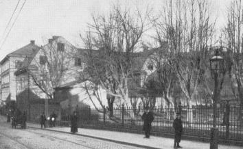

Södermalm i tid och rum. Stockholm
Vår kyrka (Hämtat från Maria Magdalenas församlings hemsida)
Exakt vilka förändringar kapellet under tidernas lopp undergått är dock inte helt känt. Av ett gammalt kopparstick kan man dock konstatera, att det varit en liten enskeppig tegelkyrka med kraftigt, fyrkantigt torn och hög spetsig spira. Under Gustav Vasas befrielsekrig kom kapellet år 1522 att ligga i stridslinjen.
Fem hundra av svenskarnas bästa soldater under ledning av den oförvägne Peder Fredag gömde sig i kapellet och då kung Kristian II:s soldater gjorde ett utfall från staden mot Södermalm, angrep danskarna bakifrån och enligt Peder Swarts krönika klappade dem på båda sidor så att ganska få undkommo. Kanske var det den erfarenheten som fick Gustav Vasa att efter besluten vid Västerås riksdag 1527 låta riva kapellet. Kung Gösta hade ju sett att kapellet på Södermalm kunde vara en angripare till nytta.
Vad fadern raserat vill sonen återuppbygga. Johan III lät 1588 påbörja byggandet av en ny kyrka på det gamla kapellets raserade murar. Vid Johan III:s död 1592 avstannade emellertid bygget och först två år efter Gustaf II Adolfs död kunde den nya korsformade kyrkan invigas år 1634. Nicodemus Tessin d.ä. och d.y. barockens två främsta representanter inom sina områden har båda sina namn förknippade med den vidare utbygganden, och det är också barockens stilart, som går igen i kyrkans arkitektur, däri inberäknat också den smäckra tornspiran som Tessin lät resa 1676, kanske den vackraste spira Stockholm ägt, och vars saga inte blev mer än 83 år gammal.
Den 19 juli 1759 utbröt en förhärjande eldsvåda på Söder. 300 hus lades i aska och kyrkan blev illa åtgången av elden. Klockorna föll ur tornet, de gipsade trävalven rasade och praktiskt taget alla inventarier brann upp. Kyrkans böcker och silver förvarades brandsäkert och kunde räddas, men för övrigt gick generationers arbete till spillo.
Överintendent C. J. Cronstedt anförtroddes återuppbyggnadsarbetet och han lyckades få sitt verk färdigt till invigningen den 23 maj 1763. På ett skickligt och pietetsfullt sätt har han förmått bevara den tessinska arkitekturens karaktär. Med smärre förändringar (dit hör borttagandet av den övre läktaren) har kyrkan idag i stort sett samma utseende som för 200 år sedan. Den senaste invändiga restaureringen utfördes1927 under professor Israel Wahlmans ledning och den senaste utvändiga förbättringen av kyrkans ursprungliga lejongula murverk 1986.
Kyrkans plan framvisar nu ett enskeppigt långhus med i öster förlagt tresidigt kor och korsarmar, upptagande en bredd av tre travéer i långskeppet. I de fyra vinklarna mellan långhus och tvärskepp finns mindre utbyggnader från olika tider. Den nordöstra tjänstgör som sakristia, den sydöstra som skrud- och silverkammare, den nordvästra som kapprum och den sydvästra som kombinerat vigselrum och doprum. Huvudportalen är belägen i väster. När man därifrån inträder i kyrkan får man ett mycket klart intryck av kyrkorummets tidlösa allvar och korets utsökta och ljusa harmoni.
Altartavlan har som motiv Herdarnas tillbedjan och är ett verk av Maria-sonen Louis Masreliez (omkring 1800).
Kyrkans gamla altarskåp såldes redan före den stora branden och finns nu i koret i Piteå stads kyrka.
Predikstolen, ett rokokoverk av synnerligen elegant hållning, är ritad av kyrkans nybyggare överintendent Cronstedt och uppsatt år 1763. På framsidan finns en medaljong av Maria Magdalena.
Orgelfasaden av C. F. Adelcrantz 1774, imponerande och mäktig, anses som ett av den svenska rokokons bästa verk i sitt slag.
Nuvarande orgel med 50 stämmor är byggd 1927 av Åkerman och Lund. Den räknas som ett av de finaste bevarade senromantiska orgelverken i vårt land.
1986 erhöll kyrkan en andra orgel som placerades på södra sidoläktaren (orgelbyggare: S. Magnusson). I koret finns en liten orgel från 1993.
Dopfunten, framför skrudkammaren, under en päll av italiensk sidendamast, är förfärdigad av en Christian Stenhuggare 1638. När det är dop i kyrkan tänds ljuset framför funten. Kyrkans äldsta inventarium, stammande från 1500-talet, är ett dopfat av driven mässing med majuskelinskrifter.
Nattvardskärlen tillhör de inventarier som räddades undan branden1759. Bland dem märks den medeltida nattvardskalk, som räddades vid svenskarnas stormning av den polska staden Thurn och av Carl XII överlämnades till fältprästen Samuel Törling, kyrkoherde i församlingen 1705 1712.
Skrudkammaren har fullständig uppsättning av mässkrudar och antependier i de liturgiska färgerna, de flesta tillkomna under senare tid.
Epitafierna och minnestavlorna, som finns uppsatta i kyrkorummet, är tillkomna efter 1759. De äldre försvann med branden. Ett av epitaferna, över hovsekreterare Claude Laurent, bär en av Johan Tobias Sergel utförd porträttmedaljong. Framme i koret, vid norra sidan, finns en minnestavla över Christopher Polhem, i norra skeppets fond en över Carl Mikael Bellman, vars morfar Michael Hermonius, var kyrkoherde här, samt i södra skeppets fond en över läkaren Johan von Hoorn, den svenska barnmorskeundervisningens grundläggare.
Gravkamrar från gången tid finns under kyrkans golv. Fordom omhägnades kyrkogården av bogårdsmurar. Minnet därav lever kvar i den gravkammarlänga, som flankerar kyrkogårdens södra sida. Där är också inrymt ett begravningskapell, som nu användes som kapell av en finsk-estnisk ortodox församling och en rysk-ortodox församling.
Skalderna Lasse Lucidor, Johan Runius, Erik Johan Stagnelius, Werner Aspenström och K. A. Nicander har funnit sitt sista vilorum på kyrkogården; Skalden Jacob Frese är gravsatt i kyrkan. Trubaduren Evert Taube, och hans hustru Astri har jordfästs på kyrkogården samt konstnärerna Hilding Linnqvist och Erik Höglund .
S:ta Maria Magdalena kyrka har mycket gamla anor. På den plats där kyrkan idag är belägen, uppfördes på 1350-talet, på tillskyndan av kung Magnus Eriksson och med tillstånd av påven Clemens VI, ett begravningskapell. Namnet Capella S:ta Maria Magdalena var en påminnelse om den Maria från Magdala, som på påskmorgonen skyndade till Jesu grav, och mötte den Uppståndne Kristus i örtagården (se ex Matt 28:1 ff.).
Kyrkans öden finns klart berättade på den stora tretonsklockan uppe i tornet, där man läser:
»År 1759 den 19 juli avbrändes tillika med en stor del av St. Mariae Magdalenae församlings hus dess vackra kyrka med allt dess innandöme samt koppartak och torn, då även alla 5 klockorna försmältes. Nu är denna stora klocka av de förras lämningar på församlingens bekostnad i nov. månad samma år gjuten av G. Meyer. »
Gick klockgjutningen alltså fort undan efter branden så dröjde inte heller återuppbyggandet länge, redan 1763 kunde invigningen ske och det skick kyrkan då fick har den sedan i stort behållit. Om händelserna före branden är inte så mycket bekant, enligt traditionen skall Sten Sture d. ä. ha utsett platsen för den första kyrkan, som revs av Gustav Vasa av strategiska skäl. Hans egna män hade själv använt den vid ett utfall under Stockholms belägring; så han visste vad den dög till. Nästa kyrka påbörjades på 1570-talet, men fullbordades först efter ett åttiotal år.
|
  Kyrkogården i obeskuret skick med Maria gamla kyrkoherdeboställe i hörnet av Ragvaldsgatan. Kyrkogården i obeskuret skick med Maria gamla kyrkoherdeboställe i hörnet av Ragvaldsgatan.
|
Kyrkogården har under senare tider haft hårdare öden än själva kyrkan. Hornsgatans breddning, som på denna punkt genomfördes 1903, skar av tio meter av kyrkogården. Den vackra port som förr utgjorde entren från Hornsgatan hade dock försvunnit vid ett tidigare tillfälle. En del förändringar på kyrkogården blev nödvändiga genom ingreppet, bland annat måste skalderna Stagnelius' och Nicanders gravar flyttas. Söderbor som var med om proceduren försäkrar att det var likdelar efter tre personer som togs upp och menar att en viss förväxling måste ha skett. Saken är kanske av mindre betydelse, huvudsaken är väl att de båda skaldernas minne lever i deras diktning och i de vårdar som pryder de nya gravarna.
Helt försvann emellertid vid omläggningen den så kallade Getgubbens tårpil nära kyrkogårdsstaketet mot Hornsgatan. Getgubben Ekström var ett mycket känt Söderoriginal från det tidigare 1800-talet. Enligt uppgifter i »Gamla Stockholm» skall han ha varit dödgrävare, men då rykten började komma i omlopp om att han var gravplundrare bröt hans familj med honom - hustrun hade krog på Hornsgatan - och han livnärde sig i fortsättningen på att sälja getmjölk. Getterna hade han i bet kring Zinkens damm. En av sönerna höll emellertid fast vid fadern och då sonen dog planterade Ekström den vackra tårpilen på hans grav.
Vid breddningen av Hornsgatan utplånades också det vackra 1600-talshuset i hörnet av Ragvaldsgatan och Hornsgatan som varit Maria församlings kyrkoherdeboställe liksom ett gravkor med samtidigt kupigt och brutet tak på kyrkogårdssidan av huset.